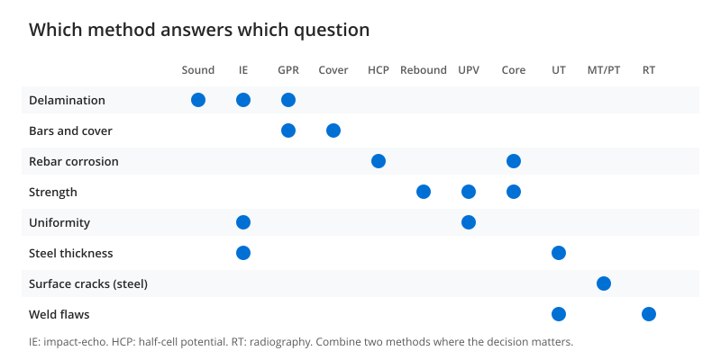

Choosing a test method
In one sentence: start from the question, not the instrument: decide what you need to know, then pick the cheapest method that answers it, and confirm with a second method or a core where the decision is important.

Match the question to the method
| Question | Concrete | Steel |
|---|---|---|
| Is there a hidden delamination or void? | Sounding, chain drag and impact-echo, Ground-penetrating radar, thermography | — |
| Where are the bars and how deep? | Cover meters and rebar locating, GPR | — |
| Is the rebar corroding? | Half-cell potential and corrosion testing, chlorides, resistivity | — |
| How strong is it? | Cores and other destructive checks, with Rebound hammer and Ultrasonic pulse velocity for coverage | Coupons, hardness |
| Is it uniform, are there internal cracks? | UPV, impact-echo | Ultrasonic testing of steel and welds |
| How thick is it still? | Impact-echo, GPR | UT thickness gauge |
| Is there a surface crack? | Visual, crack gauge | Magnetic particle and dye penetrant testing |
| What's inside the weld? | — | UT, phased array, Radiography (X-ray and gamma) |
| Is it moving or changing? | Structural health monitoring | Monitoring |
Other factors
- Access: one side or two? Hands-on or from a distance?
- Surface: coatings, overlays, wet surfaces.
- Size of the area: spot checks or a whole deck. Scanning methods (GPR, impact-echo scanners, thermography) cover large areas quickly.
- Disruption: traffic control, radiation exclusion zones, noise.
- Budget and time.
Combine methods
No single NDT method is decisive. A typical deck survey combines sounding or impact-echo (delamination), GPR (cover and deterioration), half-cell (corrosion) and a few cores (chlorides and calibration). When methods agree, the conclusion is solid; when they disagree, you've found where to look more closely.
Plan the locations
Use the visual inspection and the drawings to put tests where the question is: in the defective zone and in a sound zone for comparison.
Common mistakes
- Bringing the instrument you own instead of the one that answers the question.
- Testing only where it's easy to reach.
- No reference area of sound material for comparison.